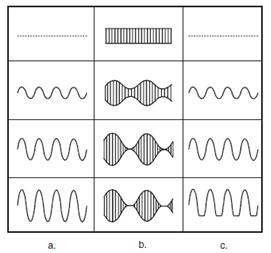
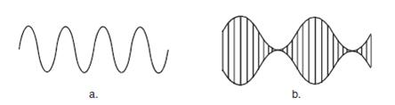
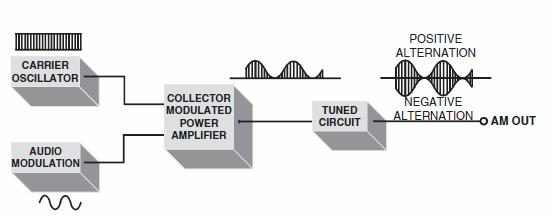
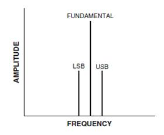
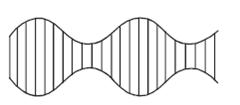
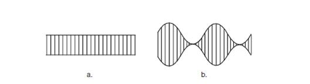
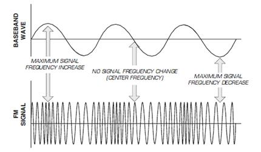
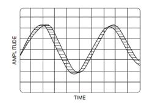
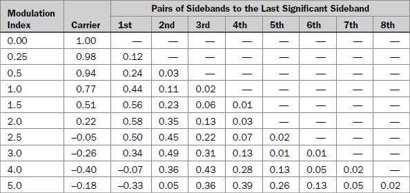

Chapter 10: FM/AM
10.1 FM/AM Introduction
Introduction to AMAmplitude modulation is the earliest modulation method for wireless voice communications. Not only is it very simple and cheap to work with from a hardware standpoint, but is still extensively used today for commercial and shortwave broadcast, as well as in certain citizen's band radios and a few ham radio systems.
Modulation is the way we insert baseband information on an RF carrier wave. The baseband information can be voice, digital data, analog video, and so on. Demodulation is the procedure of extracting this baseband information, which is then sent to a speaker for voice and music, or on to digital circuits for processing or storage.
The most basic way we have of imprinting voice, data, or music on an RF carrier is by modulating the amplitude of this carrier. The unmodulated RF, which is produced by an oscillator, functions as the carrier that will transport the baseband modulation through space to a receiver. The baseband is the intelligence-always at a much lower frequency than that of the RF carrier-that is inserted onto this carrier through nonlinear mixing of the two signals. As seen in the time domain, the amplitude of the RF carrier is modified at the rate of the baseband's own amplitude and frequency variations. In fact, if the amplitude of the baseband signal increases, then so will the amplitude of the RF carrier; while decreasing the baseband's amplitude decreases the amplitude of the carrier.

Baseband modulation at various amplitudes; (b) a carrier unmodulated and at various amplitude modulation percentages; (c) the demodulated waveform at baseband.
The baseband modulation travels with the RF carrier to the receiver. The receiver then takes these amplitude variations that are riding on the carrier and removes them, thus converting them back into the original audio amplitude variations that were inserted at the transmitter. The recovered baseband is then amplified and fed into a speaker, or some other appropriate transducer. The actual percent of modulation is what controls the final amplitude of the detected signal, and the higher the amplitude of the baseband signal the higher the volume at the receiver's speaker.

(a) The baseband audio modulation; (b) the 100% AM-modulated RF waveform.
When the baseband signal is modulated at the transmitter, both the positive and negative alternations of the RF carrier will be influenced symmetrically. This means that the missing negative alternation lost by the Class C collector modulation circuit will be recreated again by the tuned output tank of the transmitter's final amplifier, forming a mirror image of the positive alternation.

Sidebands are formed by this modulation between a carrier and its baseband signal, which are viewable in the frequency domain as shown in below.

A carrier with its sidebands when AM modulated by a single baseband tone.
These sidebands are created by the modulator's nonlinear mixing circuit producing sum (the upper sideband) and difference (the lower sideband) frequencies. But it is the phase relationships between the RF carrier and the upper and lower sidebands that actually creates a new waveform that will deviate in amplitude in the time domain.

A single-tone amplitudemodulated RF carrier in the time domain.
This effect is produced when the two sidebands and the carrier are in phase, causing the amplitude of the modulated carrier waveform to be double that of the unmodulated carrier; and when the carrier and the two sidebands are completely out of phase, the amplitude of this new carrier waveform will be virtually zero. The new waveform will therefore have high peaks and low valleys.

An unmodulated carrier and (b) a 100% amplitude-modulated carrier in the time domain.
Disadvantages of AM
The disadvantages of AM are many: The bandwidth of an AM signal is twice what is required for the reception of the intelligence being sent, since only one sideband is absolutely necessary to convey the baseb and information; a significant amount of power is in the carrier, which is not even required to furnish the intelligence; the phase relationship between the carrier and the sidebands must be precise, or severe fading will result within the demodulated signal (which is quite difficult to maintain under most atmospheric and multipath conditions).
Introduction to FM
Frequency modulation was originally invented as an answer to the many deficiencies inherent in AM, which is fundamentally that of excessive noise sensitivity. Since noise is normally produced by undesired amplitude variations in a signal, this can easily be removed in frequency-modulated receivers by amplitude limiters. Two techniques can be employed to generate an FM signal. The first, which directly alters the frequency of the carrier in step with the baseband's amplitude variations, is called direct FM; and the second method, indirect FM, changes the phase of the carrier, which creates phase modulation. However, both of these techniques produce the end effect of frequency modulation of the RF carrier. Both methods are classified under the designation of angle modulation.
Modulation is the method we use to insert baseband information on an RF carrier wave. The baseband information can be voice, digital data, analog video, and so on. Demodulation is the procedure of extracting this baseband information, which is then sent to a speaker to reproduce the original voice and music, or on to digital circuits for processing or storage.
FM accomplishes this modulation process by altering the carrier's frequency in step with the baseband signal's changes in amplitude. When this frequency-modulated RF carrier arrives at the receiver, the frequency variations as created by the original baseband modulations are changed back into amplitude variations. This baseband is then amplified and inserted into an appropriate transducer. As stated, in FM the baseband's amplitude alters the frequency of the RF carrier, and not the amplitude as it does with AM, while the amount of the actual frequency deviation of the FM carrier is dependant on the increase or decrease in this baseband's amplitude.
Frequency deviation is considered to be the amount the RF carrier deviates from its center frequency in one direction during modulation. Without any baseband modulation present, however, the frequency of the RF carrier will stay at the transmitter's predetermined center frequency, which is the frequency of the master oscillator after any multiplication. Thus, as the baseband modulation occurs, the carrier will increase and decrease infrequency; as the baseband swings positive in amplitude, the carrier will increase in frequency, but as the baseband modulation swings negative in amplitude, the frequency of the carrier will fall below its rest frequency.

A baseband modulating signal's effect on a carrier during frequency modulation.
The frequency of the baseband signal will change the rate that the frequencymodulated RF carrier intersects its own rest frequency, and will vary at this same baseband rate. As an example, if a baseband audio tone is inserted at 2 kHz, the FM carrier will actually swing past its own rest frequency 2000 times in 1 second.
Unlike AM modulation, the percent of modulation for FM is directed by government rules and regulations, and not by any natural limitations. For instance, narrowband voice communications is considered to be 5-kHz deviation for 100% frequency modulation, while with wideband FM broadcast, a maximum allowed deviation is 75 kHz. But if the baseband signal's amplitude should induce the FM deviation to go above this 100% limit, then more frequency sidebands will be created, which broadens the bandwidth conceivably causing interference to any adjacent channels.
When FM is observed on an oscilloscope in the time domain, the modulated RF carrier will not change in amplitude, but only in frequency (exaggerated here for clarity). These rapid frequency fluctuations are evidenced by the shortening and lengthening of the carrier's wavelength on the scope's cathode ray tube display, creating a blurring of the signal. And since wavelength equals the speed of light divided by the frequency, we can readily see that any shift in wavelength corresponds to a change in frequency.

A time domain view of frequency modulation
The total FM transmitter power will always stay constant during baseband modulation, so the combined power or voltage in an FM signal will not vary whether it is modulated or unmodulated. However, any sidebands formed by the modulation must gain their power from the carrier itself. This carrier must then sacrifice some of its own power in the creation of these FM sidebands. For instance, let us assume that an FM transmitter is sending out an unmodulated carrier at 100 W. When the RF carrier is modulated by the baseband signal it must give some-or even all-of its power to these sidebands. Thus, the carrier and its significant sidebands must all total-up to the original 100 W that was present in the unmodulated carrier. At certain modulation indexes, the carrier itself will actually vanish, while the sidebands will now contain all of the power.

An infinite number of sidebands will be created during the modulation process, since the carrier is sent through an infinite number of various frequency or phase values by the continually changing baseband frequencies. This action produces an infinite amount of sideband frequencies, with even the amplitude of a single test-tone (which is changing only in a sinusoidal manner) having an infinite number of discrete amplitudes within a single cycle.
Due to the difficulties inherent in infinite, the concept of the significant sideband was created. Significant sidebands are any sidebands with amplitude that is 1% or more of the amplitude of the unmodulated carrier. When a sideband is below this level it may be ignored, while the higher the amplitude of the baseband modulation the higher the number of these significant sideband frequencies produced.
FM and AM Comparisons
Frequency modulation holds many benefits over amplitude modulation:
Superior noise immunity helped by amplitude limiting to eliminate AM noise; decreased high frequency noise constituents due to pre-emphasis circuits, which boost the higher frequencies at the transmitter, along with deemphasis, which attenuates the now overemphasized frequencies at the receiver; FM's capture effect, which forces any undesired signal that is near, or at the same, frequency as the desired signal to be rejected. And, since FM does not have a delicate modulation envelope, as does AM, FM does not require Class A linear transmitter amplifiers, but instead can utilize the far more efficient saturated types in both its RF and intermediate frequency (IF) sections. Also, transmitter efficiency in FM is quite high, considering the transmitter itself can be modulated by low-level techniques, needing little baseband modulation power.
Frequency modulation does have its drawbacks. Increased bandwidth is necessary because of the additional sideband production over AM; the broadcast FM transmitter and receiver are more expensive to design and construct due to their higher frequencies of operation, along with higher stability requirements; bouncing the FM signal off the atmosphere's ionosphere creates distortion of the FM wave, so it is normally (unless repeaters are used) strictly a line-of-sight communications medium.
A reprise of some of the more important FM terms:
- Center frequency, sometimes referred to as the rest frequency, is the FM transmitter's carrier frequency with 0% modulation.
- Frequency deviation is the amount the RF carrier shifts from its center frequency in a single direction when modulated.
- Frequency swing is the movement of the modulated carrier on both sides of the center frequency, or twice the frequency deviation.
- Modulation index, which is employed when one tone, at a steady deviation, is transmitted, and is the ratio between the carrier's instantaneous frequency deviation divided by the instantaneous frequency of the modulation.
- Deviation ratio is the ratio between the maximum frequency deviation, with 100% modulation, divided by the maximum audio modulation frequency.